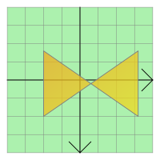

| Home · All Classes · Modules · QSS HELP · QSS 案例 · VER007 HOME |
该QGraphicsPolygonItem类提供了一个多边形的项目，你可以添加到QGraphicsScene。More...
该QGraphicsPolygonItem类提供了一个多边形的项目，你可以添加到QGraphicsScene。
要设置项目的多边形，通过一个QPolygonF到QGraphicsPolygonItem的构造函数，或致电setPolygon（）函数。该polygon（ ）函数返回当前的多边形。

QGraphicsPolygonItem使用多边形和笔宽，以提供合理的实施boundingRect（ ）shape（）和contains（ ） 。该paint（ ）函数绘制使用该项目的相关的画笔和画刷多边形，你可以通过调用设置setPen（）和setBrush（）函数。
该parent的说法，如果不是没有，原因self通过Qt的，而不是PyQt的拥有。
该scene的说法，如果不是没有，原因self通过Qt的，而不是PyQt的拥有。
构造一个QGraphicsPolygonItem。parent被传递给QAbstractGraphicsShapeItem的构造。
See also QGraphicsScene.addItem（ ） 。
该parent的说法，如果不是没有，原因self通过Qt的，而不是PyQt的拥有。
该scene的说法，如果不是没有，原因self通过Qt的，而不是PyQt的拥有。
构造一个QGraphicsPolygonItem同polygon作为默认的多边形。parent被传递给QAbstractGraphicsShapeItem的构造。
See also QGraphicsScene.addItem（ ） 。
从重新实现QGraphicsItem.boundingRect（ ） 。
从重新实现QGraphicsItem.contains（ ） 。
返回多边形的填充规则。默认的填充规则是Qt.OddEvenFill。
See also setFillRule（ ）QPainterPath.fillRule（）和QPainter.drawPolygon（ ） 。
从重新实现QGraphicsItem.isObscuredBy（ ） 。
从重新实现QGraphicsItem.opaqueArea（ ） 。
从重新实现QGraphicsItem.paint（ ） 。
返回该项目的多边形，或者一个空的多边形，如果多边形没有被设置。
See also setPolygon（ ） 。
设置多边形的填充规则rule。默认的填充规则是Qt.OddEvenFill。
See also fillRule（ ）QPainterPath.fillRule（）和QPainter.drawPolygon（ ） 。
设置项的多边形也可以在给定polygon。
See also polygon（ ） 。
从重新实现QGraphicsItem.shape（ ） 。
从重新实现QGraphicsItem.type（ ） 。
| PyQt 4.10.3 for X11 | Copyright © Riverbank Computing Ltd and Nokia 2012 | Qt 4.8.5 |